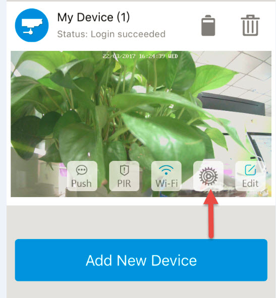
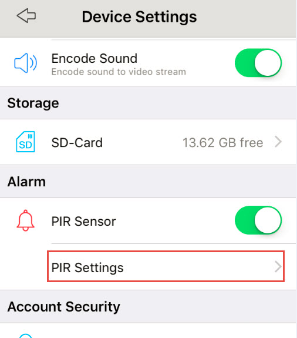
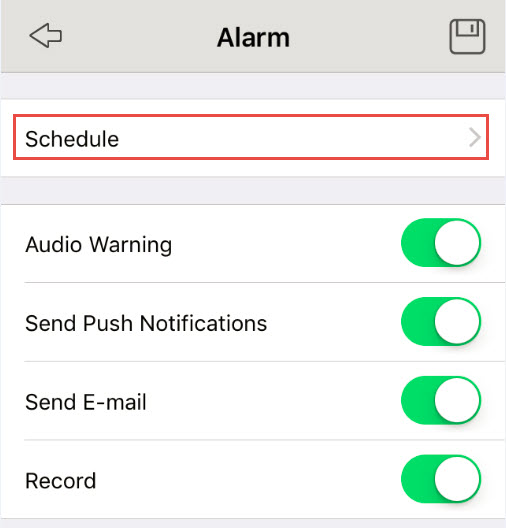
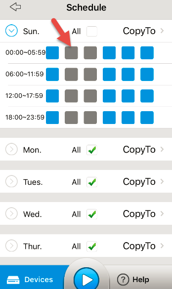
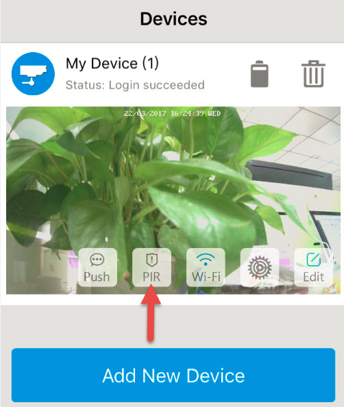

With the 4 CR123A batteries we provide, one of which has 1600mAH, the StreamView battery-powered camera (the 100% wire-free cam) supports up to 180 days in Standby mode, or 500 minutes (Keen)/800 minutes (Argus) of motion recording and Live view.
The battery life is subject to your actual use on the camera. In the case that you may find the batteries of the camera do not last as long as you expect, you can try the suggestions below to extend the battery life in installing and using the device:
1. the StreamView battery-powered camera is not designed for 24/7 full capacity running. It's designed to record motion events and remotely live view. Please note that a new set of 4 batteries will support 500 minutes (Keen)/800 minutes (Argus) of motion recording and Live view.
To avoid short battery life caused by frequently PIR triggering, it is not suggested to install the PIR at a place with lots of human activities where motion will be triggered frequently.
Under the circumstance that the PIR has to be installed at such a place, it is strongly recommended to set up the Motion Schedule, and disable the PIR at the time period with lots of human activities. Please follow the steps below on StreamView App to configure the Schedule:
A. Tap "Device Settings", and select "PIR Settings" under "Alarm".


B. Go to "Schedule", change the schedule type of the time period to "None" (in grey color), tap on the grid box to change it, than tap the left arrow on top to go back to "Alarm", and tap the button on the top right to save the settings.


Or you may manually disable the PIR temporarily, and enable it later when you need it. On the "Devices" page, press the PIR icon to disable/enable it. The icon means PIR is enabled while means PIR is disabled.

2. Installing the PIR sensor at a properly place will avoid false trigger of PIR effectively, which will in turn extend the battery life. When installing it, please:
A. Stay away from the outlet, such as the air conditioner vent, humidifier outlet, the heat transfer vent of projector and etc.; B. Stay away from wireless interference, such as the Wi-Fi router, phones and other devices with the function of wireless launch; C. Do not face the sunshine; the lamplight is allowable; D. Do not face the mirror.
3. When installing the camera, please do not place it very far away from the router; make sure it has a good Wi-Fi signal from the router and the network is stable. When it receives a poor signal, the camera will need more power to transmit data; as a result, the batteries will run out more quickly.
If you experience any problems, please contact us for further support.
Applies to:StreamView Keen and StreamView Argus.